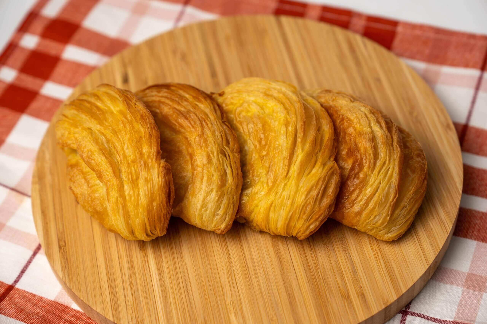
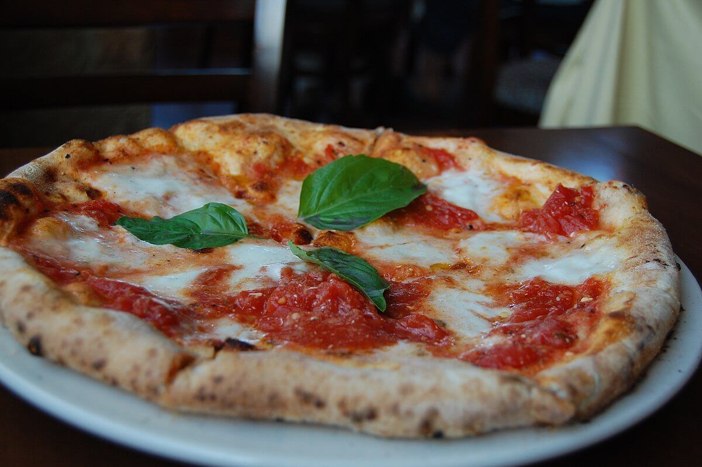

GourmeTech
Accueil
Ajouter une recette
Mes favoris
A propos
Catégorie
Entrée
Plat
Dessert
Temps de préparation
Rapide (- 30 min)
Moyen (30 > 60 min)
Long (> 60 min)
Difficulté
Facile
Moyen
Difficile

Pasteis de Chaves
Dessert
25 min
Moyen
Voir la recette
Rougail Saucisse
Plat
60 min
Difficile
Voir la recette

Pizza Margerita
Plat
15 min
Facil
Voir la recette